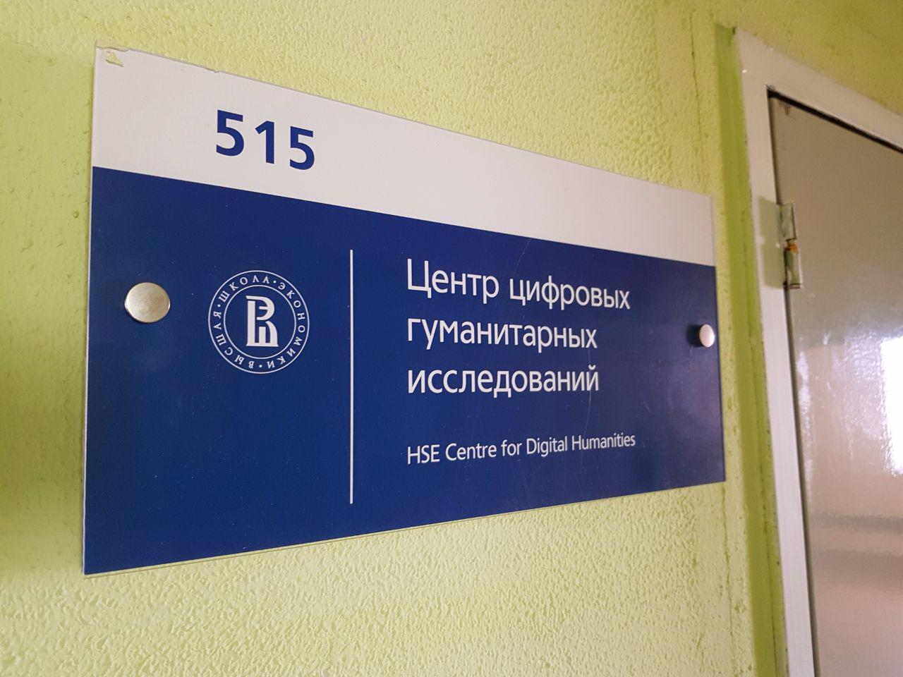
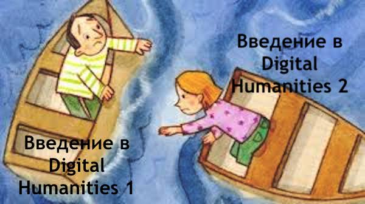
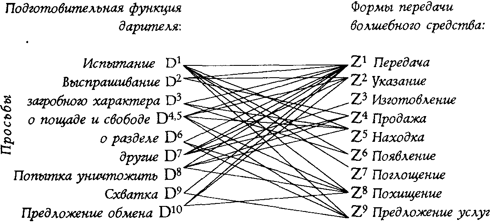
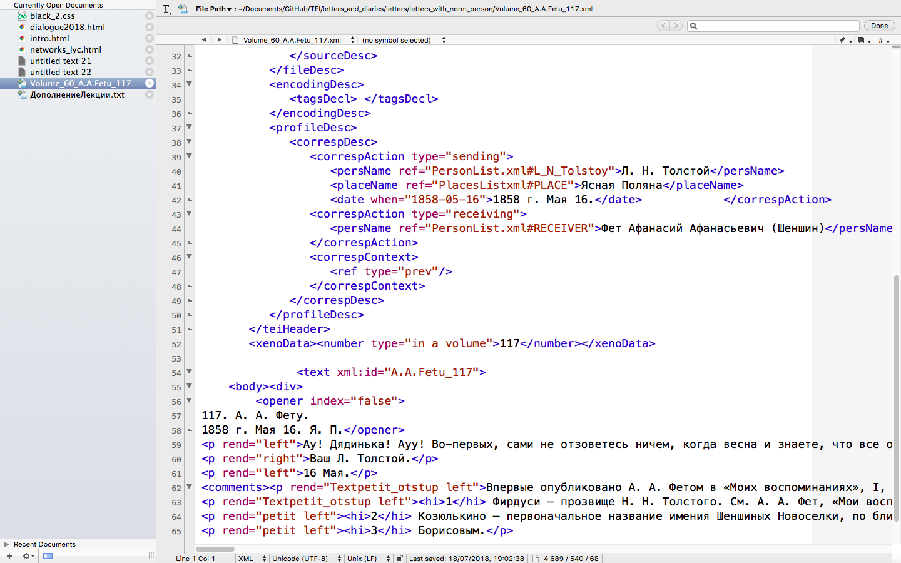
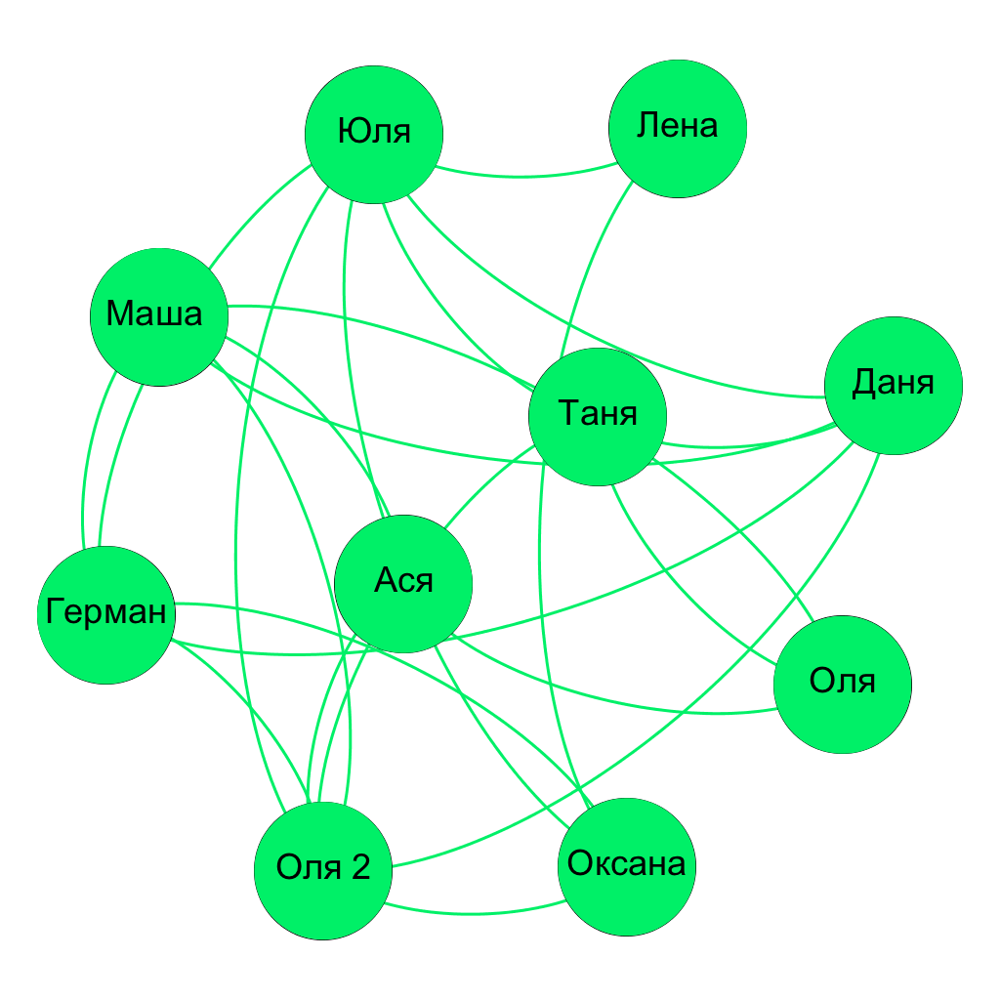

Внимание
Это нелинейная презентация
Следующий слайд — ПРОБЕЛ , предыдущий — SHIFT+ПРОБЕЛ
Введение в Digital Humanities
1 - 2 модуль (сентябрь-декабрь 2018)
Кто я такой
Меня зовут Даня, и я работаю тут
Центр цифровых гуманитарных исследований НИУ ВШЭ
План на сегодня
- Что будет на этом курсе
- Что за Digital Humanities?
- Немного истории
- Современные направления цифровых гуманитарных исследований
- ....иииии выходные!🥤
Об этом курсе
Раньше это был полугодовой курс
'Введение в цифровые гуманитарные исследования'
Но теперь...
Что будет на Digital Humanities 1
| Дата | Тема |
|---|---|
| 8 сентября | Введение в Digital Humanities; идея "Дальнего" (дистантного) чтения |
| 15 сентября | Корпусный анализ и его применение в гуманитарных исследованиях |
| 22 сентября | Стилеметрия (computational stylistics): лекция + практика |
Что будет на Digital Humanities 1
| Дата | Тема |
|---|---|
| 29 сентября | Стилеметрия: больше практики! |
| 13 октября | Сетевой анализ |
| 20 октября | Сетевой анализ: практика |
Оценка за первую половину
- Вы объединяетесь в команды по 3-4 человека
- И выступаете с мини-исследованием
- В исследовании нужно применить какой-то из трех изученных методов (можно сразу несколько)
Исследования прошлых лет можно посмотреть
Кстати, ссылка на эту презу:
Коммуникация!
- Ссылки на презентации будут в LMS
- Ссылки + обсуждения — чат в телеграме: Кликни чтоб добавиться
- Вариант — написать мне (@skorinkin), я добавлю
Теперь про Digital Humanities
А кто слышал про Digital Humanities?
Digital Humanities
или …Digital Humanities — о том
…что могут информационные технологии в
- исторической науке
- философии
- культурологии
- филологии (литературоведении)
- ...далее везде!
Карта Digital Humanities

Междисциплинарность
Яростная!
Что есть Digital Humanities?
повод для тонны рефлексии внутри самих Digital Humanities
whatisdigitalhumanities.com — 817 определений
А вот что говорит Википедия:
Digital humanities (DH) is an area of scholarly activity at the intersection of computing or digital technologies and the disciplines of the humanities.
Цифровые гуманитарные науки — это область исследований, обучения и созидания, созданная на стыке компьютерных и гуманитарных наук.
Особенности DH
- не про теорию, а про практику: что-то покрутить, обработать
- альтернативные форматы освоения:
- хакатоны, воркшопы, школы
- больше командной работы (относительно традиционной гуманитарной науки)
- проектная деятельность:
- "a kind of scholarship that requires design, management, negotiation, and collaboration" (Jeffrey Schnapp)
А теперь мое любимое определение
Taking tools built by warmongers, spy agencies & investment bankers and using them to study literature, philosophy, culture and the classics
(Elijah Meeks, Stanford Digital Scholarship)
Но вообще — хватит уже определений!

Picture source: How Not to Teach Digital Humanities
Немного истории
Есть две (переплетенные) истории
- Как исследователи пытались что-то формализовать, структурировать и посчитать в гуманитарных науках
- Как к этим формализациям и анализу начали применять компьютеры
XIX век: количественная история

XIX век: количественная филология
- 1851 — A. де Морган предлагает использовать среднюю длину слова для определения авторства
- 1887 — T. Mendenhall, 'The Characteristic Curves of Composition' (на картинке)
- 1890 — W. Lutosławski, 'Principes de stylométrie', расчеты по хронологии диалогов Платона

Начало XX века
- Подсчеты метрических структур (Андрей Белый, 1910)
- 1915 — Н. А. Морозов, 'Лингвистические спектры' (на картинке)
- 1915-1930 — 'Формальный метод' в литературоведении (русский формализм)

Формализм
- В. Б. Шкловский (1917): 'Литературоведение должно выдерживать научную критику'
- Б. М. Эйхенбаум (1925): '...важно было противопоставить субъективно-эстетическим принципам <...> пропаганду объективно-научного отношения к фактам. Отсюда — новый пафос научного позитивизма, характерный для формалистов'

Формализм
- Б. В. Томашевский
- Выдающийся литературовед — с дипломом инженера-электрика Льежского университета (1912)
- Статистика в поэзии, напр. «Пятистопный ямб Пушкина» (1923) (картинка)

Формальная фольклористика
- В. Я. Пропп, "Морфология сказки" 
Б. И. Ярхо (1889 — 1942)
- 'Методология точного литературоведения' (полное издание — только в 2006)
- 'Распределение речи в пятиактной трагедии' (1928 - 1929, 1935 - 1941)

А теперь — с компьютерами: Роберто Буза (Roberto Busa, 1913 - 2011)

Эндрю Мортон (Andrew Morton)
- Morton, The Authorship of the Pauline Epistles: A Scientific Solution. Saskatoon, 1965.
- Очень известная работа. Утверждение о том, что только 4 послания написаны Св. Павлом

Середина XX века: количественный поворот в истории
- Фернан Бродель (школа "Анналов"); необходимость "социальной математики"
- 1960-е: клиометрика (количественная история); Дуглас Норт, Уильям Паркер
- Исследования по эффективности рабского труда (sic!)
- C 1979 — семинар "Количественные методы в исторических исследованиях" в МГУ
- 1992 - Ассоциация "История и компьютер"
Структурализм в лингвистике, филологии, культурной антропологии
- Р. Якобсон (ранее — участник формалистского движения)
- Р. Барт, 'Смерть Автора' (1967)
- К. Леви-Стросс; испытал влияние Якобсона, косвенно, возможно, и Проппа (тоже занимался формальным анализом сказки)

Семиотика, Московско-Тартуская школа
- Юрий Лотман. "Литературоведение должно быть наукой" (1967)
- "Труды по знаковым системам" (с 1964)
- М. Л. Гаспаров и исследования семантического ореола метра

Влияние семиотиков на традиционную филологию: кейс Сапогова
- Сапогов В. А. Некоторые характеристики драматургического построения комедии А. Н. Островского «Лес» (1974)
- Количественный анализ пьесы Островского при помощи расчетов: выходы/уходы персонажей и т.п.
"Завещание" Сапогова
'Возможности содержательной интерпретации полученных параметров текста комедии “Лес” многократно увеличатся, если сравнить их с таким же образом описанными другими произведениями Островского и с пьесами его предшественников и современников'

Можете попробовать сами
rus.dracor.org
Современные цифровые гуманитарные исследования
Цифровая археология
и цифровая консервация

3D-моделирование объектов культурного наследия
Виртуальные музеи

Музеи с дополненной реальностью

Исследование потребления культурных продуктов (например, комиксов)

Айтрекер!


Геоинформатика (GIS) и гуманитарии

GIS и гуманитарии

GIS и гуманитарии

Исследования 'культурной эволюции'

Исследования 'культурной эволюции'


И кинопостеры тоже

Эволюция обложки Time

137 тыс. картин с WikiArt

137 тыс. картин с WikiArt

137 тыс. картин с WikiArt

'Культуромика'
- Michel, Jean-Baptiste; Liberman Aiden, Erez (2011). Quantitative Analysis of Culture Using Millions of Digitized Books. Science. 331 (6014): 176–82
Google Books
- 'We constructed a corpus of digitized texts containing about 4% of all books ever printed. Analysis of this corpus enables us to investigate cultural trends quantitatively. We survey the vast terrain of “culturomics”, focusing on linguistic and cultural phenomena <...>'
Культуромика в Google Books

Культуромика в Google Books

Культуромика в Google Books

Культуромика в Google Books

Идея "Дальнего" чтения (Distant Reading)

Идея "Дальнего" чтения (Distant Reading)
"[…] if you want to look beyond the canon […], close reading will not do it. It’s not designed to do it, it’s designed to do the opposite. […] we know how to read texts, now let’s learn how not to read them. Distant reading: where distance […] is a condition of knowledge […]."Идея "Дальнего" чтения (Distant Reading)
"Если же мы хотим выйти за пределы канона […], то пристальное чтение нам не подходит. Оно не создано для таких задач, оно создано для решения задач противоположных. […] мы умеем читать тексты, теперь нужно научиться не читать их. Дальнее чтение, для которого расстояние […] является условием получения знаний […].» Франко Моретти: Гипотезы о мировой литературе (2000; пер. с англ. Олега Собчука). B: Ф. М.: Дальнее чтение. Москва, 2016, стр. 83Пример "Дальнего" чтения: затихание романа

Пример "Дальнего" чтения: сокращение длины названий

Темы в дневнике
- Марта Баллард, акушерка из штата Мэн, вела дневник с 1785 по 1812 год
- За это время она приняла 816 родов и сделала около 10000 записей в дневнике
Темы в дневнике
- Марта Баллард, акушерка из штата Мэн, вела дневник с 1785 по 1812 год
- За это время она приняла 816 родов и сделала около 10000 записей в дневнике
Дневник исследовали с помощью тематического моделирования

Темы в дневнике
- MIDWIFERY: birth deld safe morn receivd calld left cleverly pm labour fine reward arivd infant expected recd shee born patient
- CHURCH: meeting attended afternoon reverend worship foren mr famely performd vers attend public supper st service lecture discoarst administred supt
- DEATH: day yesterday informd morn years death ye hear expired expird weak dead las past heard days drowned departed evinn
- GARDENING: gardin sett worked clear beens corn warm planted matters cucumbers gatherd potatoes plants ou sowd door squash wed seeds
- SHOPPING: lb made brot bot tea butter sugar carried oz chees pork candles wheat store pr beef spirit churnd flower
- ILLNESS: unwell mr sick gave dr rainy easier care head neighbor feet relief made throat poorly takeing medisin ts stomach
Какая это может быть тема?

Погода
А это?

Gardening
Стилометрия

Стилометрия

Цифровые издания

Цифровые издания

Цифровые издания

Цифровые издания

Цифровые издания вокруг Льва Толстого
Цифровое переиздание индекса к Полному собранию сочинений
Инициатива "Tolstoy.Digital"
Ссылка для демо (в работе!)
Стандарт машиночитаемого текста в гуманитарных областях

Text Encoding Initiative (TEI/XML)
Можно размечать как метаданные, так и сущности внутри художественного текста!
tolstoy.online (остторожно, совсем альфа версия!)
Сетевой анализ в гуманитарных науках
В литературе

Франко Моретти, «Теория сетей и анализ сюжета» (2011/2009)
Масштабирование

Можно смотреть динамику формальных метрик сети
Например, плотность

Плотности комедии и трагедии отличаются

За пределами литературы
Кто кого знал в Британии 500 лет назад?
- Проект Six Degrees of Francis Bacon (шесть рукопожатий Фрэнсиса Бэкона)
- Более 13.000 человек, более 200.000 связей
- Извлечено из Oxford Dictionary of National Biography
- sixdegreesoffrancisbacon.com
People of Medieval Scotland

Сети можно сочетать с картами

На этом все...
...только пройдите, пожалуйста, опрос — нам надо понять, нужен ли нам компьютерный класс